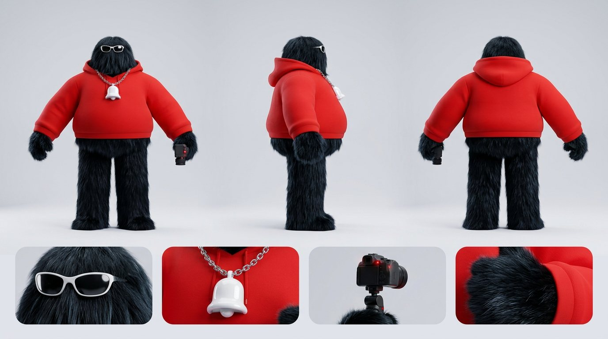
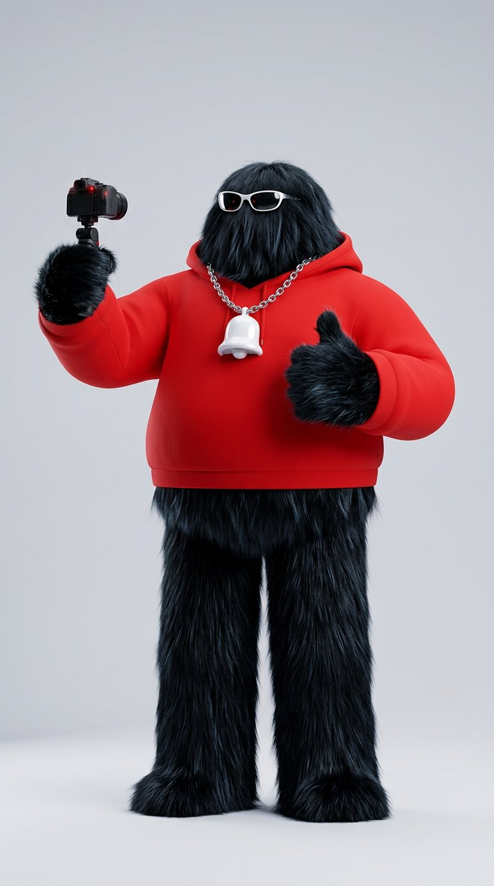
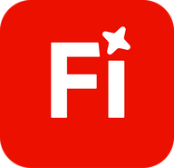
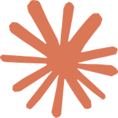
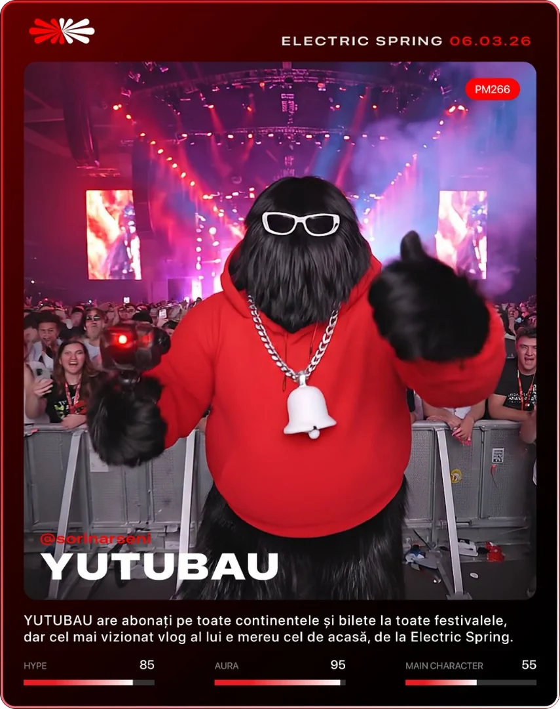

Universitatea de Stat din Moldova
Facultatea de
Jurnalism și Științe ale Comunicării
Specialitatea:
Producție Multimedia · Ciclul I, Licență
Managementul
Experienței
bau BAUby sorinarseni
Cum arată
față · profil · spate
ochelari · clopoțel · cameră ·
blană


YUTUBAU
YUTUBAU are abonați pe toate continentele și bilete la toate festivalele, dar cel mai vizionat vlog al lui e mereu cel de acasă, de la Electric Spring.
Un Bau Bau care trăiește în fața camerei. Filmează tot, de la scenă până la mulțime, și nu-și arată niciodată fața. Sub blană poate fi oricine, așa că YUTUBAU e orice creator.
- Stil
- Hanorac roșu #FF0000, ochelari albi
- Semn
- Pandantiv clopoțel pe lanț
- Mereu cu
- Camera în mână, pe REC
- Fața
- Ascunsă în blană neagră
- Acasă
- Electric Spring
Descompunerea YouTube-ului
Fiecare detaliu al personajului vine dintr-un simbol al platformei.
Ce am folosit

Adobe Firefly & Nano Banana
Personajul, fișa în toate unghiurile, generarea clipului.
Adobe Illustrator
Decupajul, rama comună și textul cardului.
Adobe Premiere Pro
Montarea clipului cu rama comună.

Claude
Formularea și rafinarea prompturilor.
Cardul animat
YUTUBAU are abonați pe toate continentele și bilete la toate festivalele, dar cel mai vizionat vlog al lui e mereu cel de acasă, de la Electric Spring.
Cadre de la Electric Spring
YUTUBAU în photo pit, culoarul din fața scenei, cu camera pe REC.



Like & Share
+ com